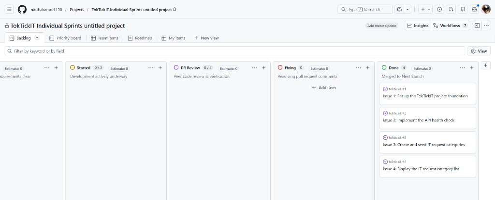
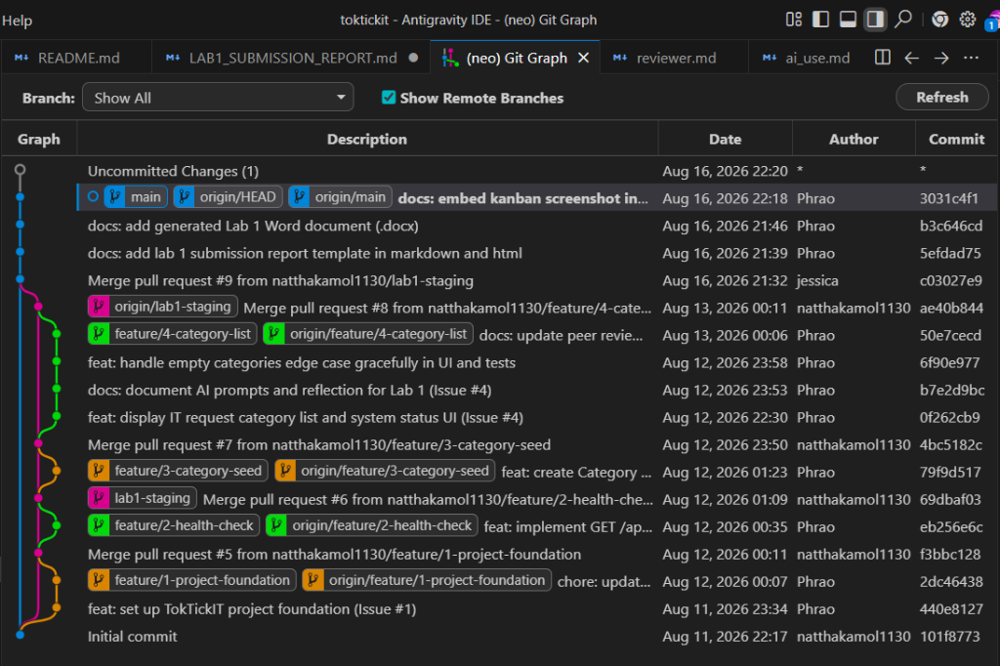

Topic: TokTickIT Full-Stack Hello World Starter & Git Engineering Workflow


* c03027e Merge pull request #9 from natthakamol1130/lab1-staging
|\
| * ae40b84 Merge pull request #8 from natthakamol1130/feature/4-category-list
| |\
| | * 50e7cec docs: update peer review record in reviewer.md (Issue #4)
| | * 6f90e97 feat: handle empty categories edge case gracefully in UI and tests
| | * b7e2d9b docs: document AI prompts and reflection for Lab 1 (Issue #4)
| | * 0f262cb feat: display IT request category list and system status UI (Issue #4)
| |/
| * 4bc5182 Merge pull request #7 from natthakamol1130/feature/3-category-seed
| |\
| | * 79f9d51 feat: create Category model and seed 4 initial categories (Issue #3)
| |/
| * 69dbaf0 Merge pull request #6 from natthakamol1130/feature/2-health-check
| |\
| | * eb256e6 feat: implement GET /api/health endpoint (Issue #2)
| |/
| * f3bbc12 Merge pull request #5 from natthakamol1130/feature/1-project-foundation
|/|
| * 2dc4643 chore: update .gitignore with IDE and env rules from peer review
| * 440e812 feat: set up TokTickIT project foundation (Issue #1)
|/
* 101f877 Initial commit# dependencies
node_modules/
# env & secrets
.env
*.env
.env.local
.env.*.local
!.env.example
# build output
dist/
build/
# prisma
server/prisma/*.db
# IDE & Editor
.vscode/
.idea/
*.swp
*.swo
# logs & OS
*.log
.DS_Store
Thumbs.dbAuthor: Natthakamol Mornparn — 67070505215 — GitHub: @natthakamol1130
Peer reviewer: Chanya — 6707051058 — GitHub: @chanya06
| PR | Branch | Reviewer verdict |
|---|---|---|
| #5 | feature/1-project-foundation |
Approved |
| #6 | feature/2-health-check |
Approved |
| #7 | feature/3-category-seed |
Approved |
| #8 | feature/4-category-list |
Approved |
Reviewer comment I received:
"โดยรวมทำได้ค่อนข้างครบตาม requirement ทั้ง API, การดึง category มาแสดงใน UI และมีการรองรับ Loading กับ Error state ด้วย แนะนำเพิ่มเติมว่าอาจลองทดสอบกรณี API ตอบข้อมูลว่าง หรือไม่มี category เพื่อดูว่า UI จะแสดงผลอย่างไร จะช่วยให้รองรับ edge case ได้ครบขึ้น"
How I responded:
"ขอบคุณสำหรับคำแนะนำ ได้อัปเดตไฟล์ client/src/App.tsx ให้รองรับกรณี categories เป็นลิสต์ว่าง โดยแสดงผลข้อความ 'No categories found.' พร้อมเพิ่ม Unit Test ตรวจสอบ Edge case นี้ใน App.test.tsx และ push ขึ้น GitHub เรียบร้อยแล้ว"
My comment:
"ตรวจสอบโค้ดและเอกสารใน PR (Issue 4) ทั้งหมดแล้วครับ พัฒนาได้สมบูรณ์แบบมาก Endpoint GET /api/categories ดึงข้อมูลและเรียงตาม id ถูกต้อง, หน้าจอ React UI และ Unit Tests ครอบคลุมทั้ง Online, Offline และ Loading, บันทึกผลเทสต์ใน tests.md และ Prompts ใน ai_use.md ได้ละเอียดครบถ้วน Approved!"
Partner's response:
"ขอบคุณสำหรับ Review และคำแนะนำครับ ได้ตรวจสอบผลการรันเทสต์และเตรียม Merge เข้า lab1-staging เรียบร้อยครับ"
| Test ID | File Path | Tool | Test Description | Result |
|---|---|---|---|---|
| API-01 | server/tests/lab-01/health.test.ts |
Supertest | Health endpoint returns 200 and expected JSON status=ok | Pass |
| API-02 | server/tests/lab-01/categories.test.ts |
Supertest | Categories endpoint returns the four seeded categories in predictable ID order | Pass |
| UI-01 | client/tests/lab-01/App.test.tsx |
Vitest | TokTickIT heading renders properly | Pass |
| UI-02 | client/tests/lab-01/App.test.tsx |
Vitest | Success state shows Online + 4 request categories list | Pass |
| UI-03 | client/tests/lab-01/App.test.tsx |
Vitest | Empty categories shows 'No categories found.' fallback | Pass |
| UI-04 | client/tests/lab-01/App.test.tsx |
Vitest | API failure displays Offline status + useful error message | Pass |
> toktickit-server@1.0.0 test
> vitest run
RUN v2.1.9 C:/Users/Windows/OneDrive/kmutt/Lab1_Starter_Scaffold/toktickit/server
✓ tests/lab-01/health.test.ts (1 test) 20ms
✓ tests/lab-01/categories.test.ts (1 test) 194ms
Test Files 2 passed (2)
Tests 2 passed (2)
Start at 21:33:09
Duration 10.68s> toktickit-client@1.0.0 test
> vitest run
RUN v2.1.9 C:/Users/Windows/OneDrive/kmutt/Lab1_Starter_Scaffold/toktickit/client
✓ tests/lab-01/App.test.tsx (4 tests) 249ms
Test Files 1 passed (1)
Tests 4 passed (4)
Start at 21:34:04
Duration 35.21sLLM/agent used: Antigravity (Gemini 3.6 Flash / Medium Thinking)
| # | Prompt Name | Actual Prompt Text (Summarised) | What I did with the result |
|---|---|---|---|
| 1 | Plan Lab 1 Implementation | Read the enclosed TokTickIT Lab 1 requirements. Summarize the four GitHub Issues, their dependencies, required outputs, and required automated tests. Propose an implementation order, but do not write code yet. | Reviewed the proposed implementation steps and approved the execution plan. |
| 2 | Set Up Full-Stack Project | Setup the TokTickIT project tech stack as given in Lab 1 using React, TypeScript, Vite, and Bootstrap for the frontend, and Node.js, Express, and TypeScript for the backend. Configure PostgreSQL and Prisma. Use the required folder structure. | Verified dependencies, initialized git repository and branch structure, and created PR #5 to lab1-staging. |
| 3 | Implement Health Check | Add GET /api/health to the existing Express backend returning HTTP 200 with { status: "ok", service: "TokTickIT API" } and verify with Supertest. |
Verified test passed 100%, committed changes to feature/2-health-check, and created PR #6. |
| 4 | Implement Category DB Feature | Define Category model in Prisma schema, run migration, and implement idempotent database seeding using upsert for the 4 required categories. | Ran Prisma migrations against PostgreSQL, verified seed idempotency, and opened PR #7. |
| 5 | Implement Category List API | Implement GET /api/categories endpoint in Express backend returning categories in predictable ID order from PostgreSQL via Prisma. | Verified endpoint with Supertest in categories.test.ts. |
| 6 | Build and Test Check System UI | Create a Bootstrap-based page with [Check System] button. When clicked, show a loading state, call backend APIs, and render status badge and category list. | Implemented App.tsx and api.ts, connected frontend with backend API. |
| 7 | Write Client Unit Tests | Write Vitest test suite for App component covering heading, success state, offline error state, and empty categories edge case. | Ran Vitest in client, confirming all 4 test cases passed. |
| 8 | Review Peer PRs and Finalize Lab 1 | Review peer partners' pull requests for Issues 1, 2, 3, and 4 with constructive feedback and document peer review records. | Provided review comments, suggested improvements (.gitignore, seed idempotency), and documented review records in reviewer.md. |
"Providing structured prompt contexts with explicit acceptance criteria, expected JSON response formats, and clear Git branch instructions allowed the agent to implement endpoints and test assertions accurately in one shot. When handling Windows PowerShell syntax nuances and database connection configurations, detailing the local environment parameters ensured that database migrations, seed scripts, and test suites executed reliably without errors."
หน้าจอเริ่มต้นเมื่อเปิด Web Application มีข้อความหัวข้อ TokTickIT IT Service Desk และปุ่ม [Check System]
เมื่อกดปุ่ม [Check System] ระบบแสดงสถานะ System Status: Online พร้อมรายชื่อหมวดหมู่ที่ดึงมาจากฐานข้อมูล (1. Account and Access, 2. Hardware, 3. Software, 4. Network)
เมื่อกดปุ่ม [Check System] ในขณะที่ Backend Server หรือ Database ปิดอยู่ ระบบแสดงสถานะ System Status: Offline พร้อมข้อความแจ้งเตือน Unable to connect to TokTickIT API